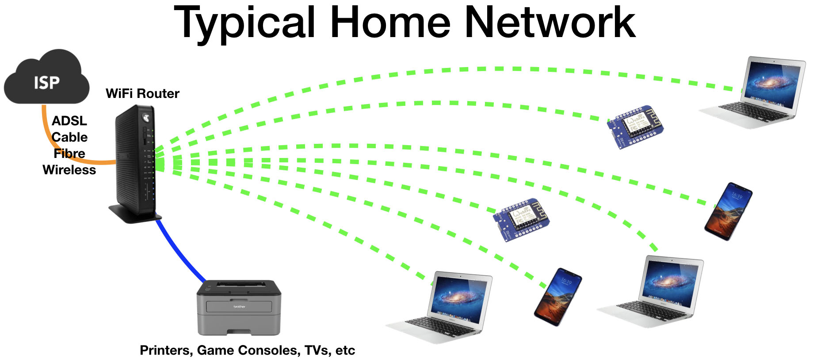

Struktura a topologie domacích sítí
Vzhledem k aktualitě problematiky, je naprosto nezbytné si určit předmět ochrany čili definovat topologii domácí sítě. Ovšem existuje mnoho způsobů sestavit lokální síť, a proto než k tomu přistoupit, je dobře si připomenout k čemu slouží.
Účely použiti domácích lokálních sítí
• Připojení současně více zařízení ke globální sítě skrz jeden přístupový bod
V současné době počet zařízení, které májí funkci připojení k internetu, je obrovský. Do něho spadají nejenom počítače a mobilní zařízení, ale také chytré televize, přehrávače, a všemožné domácí vybavení od ledničky až po kávovar. Tyto souvislosti dělají připojení k internetu pro více zařízení jednou z nejvyžádanější funkci domácích sítí.
• Předávání dat mezi členy sítě
Díky této funkci při přehrávání multimediálních souboru, není nutné si je ukládat do paměti stanice. Moderní přenosové rychlosti umožňují přehrávat tyto dokumenty dálkově pomocí počítačů a dalších multimediálních zařízení.
• Hromadné použití periferních zařízení
Skenery, tiskárny, uložiště dát. Když tyto zařízení nejsou připojené přímo na síť, ale na jeden z počítačů v sítí, pro přístup k zařízení z dalších stanic je třeba aby počítač, ke kterému je zařízení připojeno, byl zapnutý.
Topologie domácí sítě
Domácí síť se typicky skládá ze dvou až čtyř počítačů, některé z nichž májí možnost připojení bezdrátově, několika mobilních zařízení, případně periferních zařízení, článků mediálního prostředí a síťového disku. Směrovaní zajišťuje router se zabudovaným přístupovým bodem pro wi-fi síť. Do něj je zaveden kabel internetu, a má výstupy pro připojení koncových stanic.
V případě náročnějších uživatelů, sítě můžou obrůstat dalšími články, nebo můžou být použité výkonnější komponenty. Princip fungování však zůstává stejný.